Greyscale Color Model¶
The LBPM greyscale lattice Boltzmann model is constructed to approximate the solution of the Darcy-Brinkman equations in grey regions coupled to a color model implementation solution in open regions. A simple constitutive form is used to model the relative permeability in the grey regions,
Parameters¶
The essential model parameters for the color model are
alpha– control the interfacial tension between fluids –beta– control the width of the interface –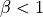
tauA– control the viscosity of fluid A –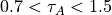
tauB– control the viscosity of fluid B –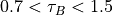
rhoA– control the viscosity of fluid A –rhoB– control the viscosity of fluid B –greyscale_endpoint_A– control the endpoint for greyscale components –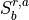
greyscale_endpoint_B– control the endpoint for greyscale components –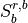
Formulation¶
The greyscale color model extends the conventional two-fluid color model such that flow through micro-porous “grey” voxels can also be treated. Extensions to the formulation are made to: (1) implement momentum transport behavior consistent with the single phase greyscale model (2) adapt the re-coloring term to allow for transport through microporosity. Mass transport LBEs are constructed to model the behavior for each fluid. Within the open pore regions, mass transport LBEs recover the behavior of the standard two-fluid color model. Within grey voxels the standard recoloring term is disabled so that the mass transport behavior can be described by a different rule within the microporous regions. The endpoints are specified based on the saturation of fluid B at which fluid A ceases to percolate, and the saturation of fluid B at which fluid B ceases to percolate, . The endpoints should be independently specified for each class of microporosity that is labeled in the input image. Between the endpoint values, the effective permeability is paramaterized based on the value
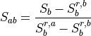
At the endpoints, the effective permeability is provided as an input parameter for each fluid. When
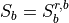
the effective permeability of fluid B is zero and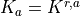
. Between the endpoints the Corey model predicts the effective permeability for fluid A according to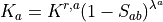
where
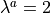
is the Corey exponent. Likewise, When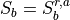
the effective permeability for fluid A will be zero, and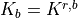
with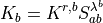
Two LBEs are constructed to model the mass transport,
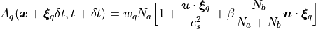
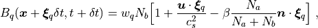
The number density for each fluid is obtained from the sum of the mass transport distributions
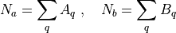
The phase indicator field is then defined as
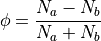
The recoloring step incorporates the standard color model rule to model anti-diffusion at the interface within the open pores. Within grey regions, the anti-diffusion term must be disabled, since within grey voxels the length scale for fluid features is smaller than the interface width produced from the color model. Within grey voxels the two fluids are permitted to freely mix between the endpoints. Beyond the endpoints, the recoloring term is used to drive spontaneous imbibition into the grey voxels
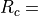
The fluid density and kinematic viscosity are determined based on linear interpolation
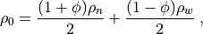
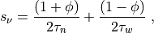
where
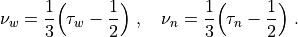
These values are then used to model the momentum transport.
A D3Q19 LBE is constructed to describe the momentum transport
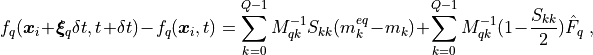
The force is imposed based on the construction developed by Guo et al
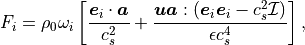
The acceleration includes contributions due to the external driving force as well as a drag force due to the permeability
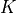
and flow rate with the porosity and viscosity determining the net forces acting within a grey voxel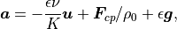
The flow velocity is defined as
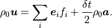
Combining the previous expressions,
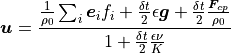
Where is an external body force and
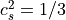
is the speed of sound for the LB model. The moments are linearly indepdendent: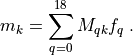
The relaxation parameters are determined from the relaxation time:
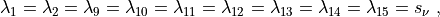
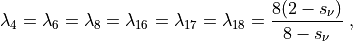
The non-zero equilibrium moments are defined as
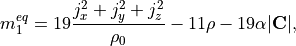
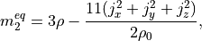
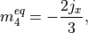
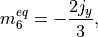
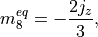
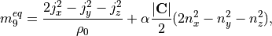
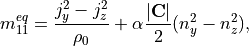
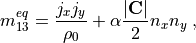
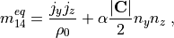
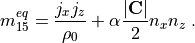
where the color gradient is determined from the phase indicator field
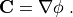
and the unit normal vector is
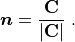
Boundary Conditions¶
Due to the nature of the contribution of the porosity to the pressure term in the Chapman-Enskog
expansion, periodic boundary conditions are recommended for lbpm_greyscaleColor_simulator
and can be set by setting the BC key values in the Domain section of the
input file database
BC = 0– fully periodic boundary conditions
For BC = 0 any mass that exits on one side of the domain will re-enter at the other
side. If the pore-structure for the image is tight, the mismatch between the inlet and
outlet can artificially reduce the permeability of the sample due to the blockage of
flow pathways at the boundary. LBPM includes an internal utility that will reduce the impact
of the boundary mismatch by eroding the solid labels within the inlet and outlet layers
(https://doi.org/10.1007/s10596-020-10028-9) to create a mixing layer.
The number mixing layers to use can be set using the key values in the Domain section
of the input database
InletLayers = 5– set the number of mixing layers to5voxels at the inletOUtletLayers = 5– set the number of mixing layers to5voxels at the outlet